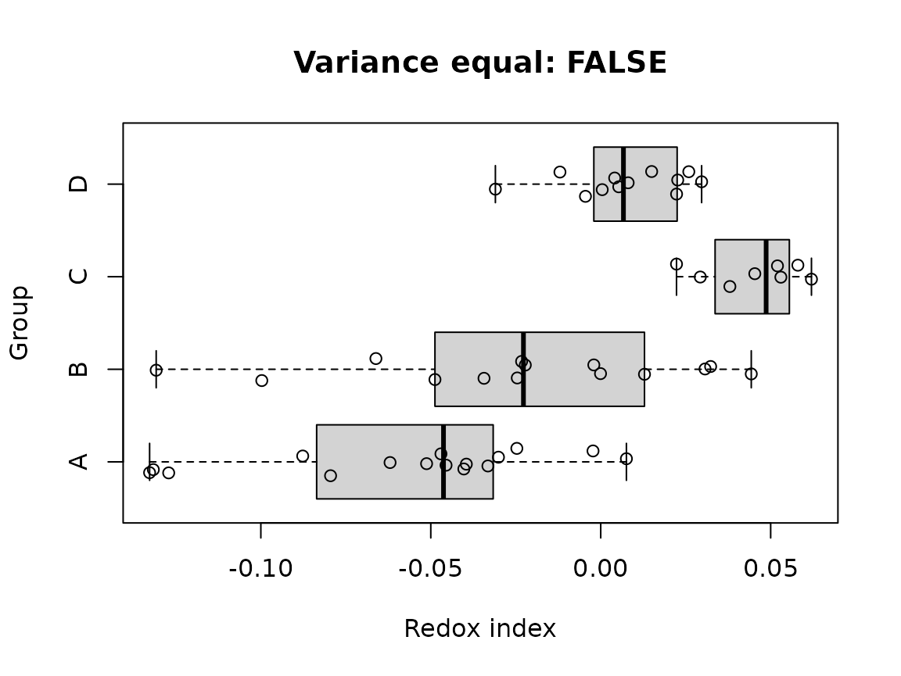
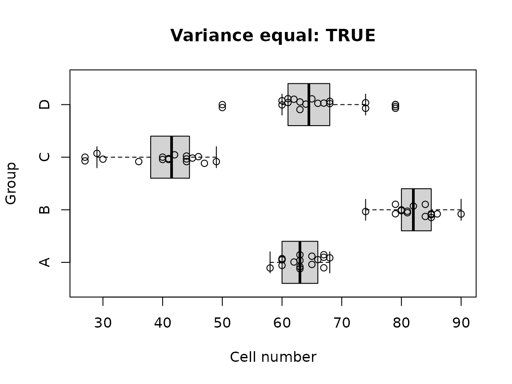

1. Overview
The varequal R package provides a
unified interface to several classical, robust, rank-based, and
variance-outlier-oriented procedures for assessing the homogeneity of
variances (homoscedasticity), that is, whether the
variances of a response variable are equal across independent groups.
The package also provides high-level functions for automatically
combining several tests into a single variance-homogeneity decision.
The main functionality:
-
*_testIndividual tests of a homogeneity-of-variance procedure; -
check_var_equal()as a wrapper for selecting an individual test; and -
is_var_equal()as a higher-level assessment combining five tests.
2. Installation
Install the released version from CRAN:
install.packages("varequal")Or install the development version from GitHub:
if (!require("pak")) install.packages("pak")
pak::pak("P10911004-NPUST/varequal")Then load the package:
3. Quick start
data("roGFP")
df1 <- roGFP[[1]]
is_var_equal(df1, ro ~ grp)
#> [1] FALSEIf you want to inspect the component tests, request a summary:
is_var_equal(df1, ro ~ grp, summary = TRUE)
#> $is_var_equal
#> [1] FALSE
#>
#> $summary
#> is_var_equal pval statistic
#> Modified Brown-Forsythe (Fvalue) FALSE 2.918003e-02 3.976918
#> Fligner-Killeen (ChiSquare) TRUE 6.677704e-02 7.166465
#> 't Lam's G (Fvalue) FALSE 1.326224e-05 8.351380
#> Levene's (Fvalue) FALSE 3.250316e-02 3.183717
#> O'Neill-Mathews (Fvalue) FALSE 4.693756e-02 2.861920
#> critical_value
#> Modified Brown-Forsythe (Fvalue) 3.310109
#> Fligner-Killeen (ChiSquare) 7.814728
#> 't Lam's G (Fvalue) 3.400135
#> Levene's (Fvalue) 2.806845
#> O'Neill-Mathews (Fvalue) 2.806845
If you only require a high-level decision about variance homogeneity,
start with is_var_equal() and feel free to skip the rest of
this guide.
For explicit test selection, use check_var_equal():
check_var_equal(df1, ro ~ grp, method = "LV")
#>
#> ---------------------------------------
#> Levene's homogeneity of variance test
#>
#> Response: ro
#>
#> DF SS MS Fvalue pvalue
#> Group 3 0.01 0 3.1837 0.0325
#> Residuals 46 0.03 0
#> Total 49 0.03
#>
#> #> Group variances are unequal.
#> ---------------------------------------4. Understanding homogeneity-of-variance testing
Homogeneity of variance is an important assumption for many classical statistical procedures, including one-way ANOVA and related linear-model analyses. When the group variances differ substantially, the validity of procedures that rely on a common variance can be affected.
The currently implemented individual tests are:
| Code | Function | Main characteristic |
|---|---|---|
AB |
Ansari_Bradley_test() |
Rank-based dispersion test |
BF |
Brown_Forsythe_test(method = "BF") |
Robust Levene-type procedure |
BL |
Bartlett_test() |
Classical parametric test |
FK |
Fligner_Killeen_test() |
Robust rank-based procedure |
LG |
Lam_G_test() |
Variance-outlier-oriented procedure |
LV |
Levene_test() |
ANOVA-based robust procedure |
MBF |
Brown_Forsythe_test() |
Mehrotra-modified Brown–Forsythe |
OB |
O.Brien_test() |
O’Brien variance test |
OM |
O.Neill_Mathews_test() |
Weighted least-squares Levene-type test |
Most procedures in this package test the null hypothesis that the variances across the groups are equal:
\[ H_0:\sigma_1^2 = \sigma_2^2 = \cdots = \sigma_k^2 \]
against an alternative in which at least one group variance differs:
\[ H_1:\text{not all }\sigma_i^2\text{ are equal}. \]
The interpretation follows the usual hypothesis-testing framework.
A small p-value provides evidence against homogeneity of variance. A large p-value means that the test did not detect sufficient evidence of unequal variances.
A large p-value does not prove that all population variances are exactly equal.
The result should be interpreted together with:
- the sample size in each group;
- the presence or absence of outliers;
- the distributional shape of the response;
- the balance of the experimental design;
- the scientific magnitude of the variance differences; and
- the assumptions of the downstream analysis.
Different tests have different sensitivities. In particular, Bartlett’s test can be very sensitive to non-normality, whereas robust and rank-based procedures are generally less affected by departures from normality.
5. Data input
The package accepts either:
- a data frame together with a formula; or
- a list of numeric vectors representing groups.
5.1 Data frame and formula
The standard interface is:
response ~ groupFor example:
Levene_test(df1, ro ~ grp)
#>
#> ---------------------------------------
#> Levene's homogeneity of variance test
#>
#> Response: ro
#>
#> DF SS MS Fvalue pvalue
#> Group 3 0.01 0 3.1837 0.0325
#> Residuals 46 0.03 0
#> Total 49 0.03
#>
#> #> Group variances are unequal.
#> ---------------------------------------The response is the dependent variable and the right-hand side identifies the independent grouping variable.
A data frame containing several experimental variables can therefore be used directly:
check_var_equal(df1, ro ~ grp, method = "BF")
#>
#> --------------------------------------------
#> Brown-Forsythe homogeneity of variance test
#>
#> Response: ro
#>
#> DF SS MS Fvalue pvalue
#> Group 3 0.02 0.01 3.9769 0.01598
#> Residuals 32.86 0.05 0
#> Total 35.86 0.07
#>
#> #> Group variances are unequal.
#> --------------------------------------------
#>
#> --------------------------------------------
#> Brown-Forsythe homogeneity of variance test
#>
#> Response: ro
#>
#> DF SS MS Fvalue pvalue
#> Group 3 0.02 0.01 3.9769 0.01598
#> Residuals 32.86 0.05 0
#> Total 35.86 0.07
#>
#> #> Group variances are unequal.
#> --------------------------------------------5.2 A list of numeric vectors
A list can be used when the observations are already separated into groups.
x <- list(A = rnorm(12), B = rnorm(12), C = rnorm(12))
is_var_equal(x)
#> [1] TRUE6. The individual tests
6.1 Ansari–Bradley test
Ansari_Bradley_test() is a rank-based procedure for
assessing equality of dispersion.
ab <- Ansari_Bradley_test(df1, ro ~ grp)
#>
#> ---------------------------------------------
#> Ansari-Bradley homogeneity of variance test
#>
#> Response: ro
#>
#> Chi-Square: 6.0855
#> Chi-Square critical: 7.8147
#> p-value: 0.10752
#>
#> #> Group variances are equal.
#> ---------------------------------------------The implementation uses an approximate chi-square statistic. The package documentation notes that results may be inaccurate for very small total sample sizes or when there are many tied values. The test is useful as a nonparametric comparison of dispersion, but it should not automatically be treated as interchangeable with a robust ANOVA-based homogeneity test.
6.2 Bartlett’s test
Bartlett_test() implements the classical Bartlett
test.
Bartlett’s test is the most powerful test when no outliers exist and the observations follow normal distribution, but it is sensitive to departures from normality and to outliers.
For data that satisfy the normality assumption reasonably well and are free of important outliers, Bartlett’s test is an appropriate classical procedure.
bl <- Bartlett_test(df1, ro ~ grp, summary = TRUE)
#>
#> ----------------------------------------
#> Bartlett's homogeneity of variance test
#>
#> Response: y
#>
#> Chi-Square: 18.4724
#> p-value: 0.00035
#>
#> #> Group variances are unequal.
#> ----------------------------------------6.3 Brown–Forsythe test
Brown_Forsythe_test() provides both the original
Brown–Forsythe procedure and the Mehrotra-modified version.
The default method is "MBF":
mbf <- Brown_Forsythe_test(df1, ro ~ grp)
#>
#> --------------------------------------------
#> Brown-Forsythe homogeneity of variance test
#>
#> Response: ro
#>
#> DF SS MS Fvalue pvalue
#> Group 1.96 0.01 0.01 3.9769 0.02918
#> Residuals 32.86 0.05 0
#> Total 34.81 0.06
#>
#> #> Group variances are unequal.
#> --------------------------------------------The original Brown–Forsythe procedure can be selected with
method = "BF":
bf <- Brown_Forsythe_test(df1, ro ~ grp, method = "BF")
#>
#> --------------------------------------------
#> Brown-Forsythe homogeneity of variance test
#>
#> Response: ro
#>
#> DF SS MS Fvalue pvalue
#> Group 3 0.02 0.01 3.9769 0.01598
#> Residuals 32.86 0.05 0
#> Total 35.86 0.07
#>
#> #> Group variances are unequal.
#> --------------------------------------------The Brown–Forsythe approach is a robust modification of Levene’s procedure that uses a robust location measure, conventionally the group median.
The package also permits a custom transformation of the response. The default is based on absolute deviations from the group median:
\[ y'_{ij} = |y_{ij} - \tilde y_i|. \]
For example:
Brown_Forsythe_test(df1, ro ~ grp, transform = function(x) abs(x - mean(x)))
#>
#> --------------------------------------------
#> Brown-Forsythe homogeneity of variance test
#>
#> Response: ro
#>
#> DF SS MS Fvalue pvalue
#> Group 1.89 0.01 0.01 5.0469 0.01406
#> Residuals 30.46 0.04 0
#> Total 32.35 0.05
#>
#> #> Group variances are unequal.
#> --------------------------------------------The method argument distinguishes the two
implementations:
-
"BF": original Brown–Forsythe procedure; -
"MBF": Mehrotra modification, which adjusts the degrees of freedom.
The modified procedure is designed to reduce Type I error inflation, with a potential trade-off in power.
6.4 Fligner–Killeen test
Fligner_Killeen_test() is a rank-based procedure that is
particularly useful when robustness to non-normality and outliers is
important.
fk <- Fligner_Killeen_test(df1, ro ~ grp)
#>
#> ---------------------------------------------
#> Fligner-Killeen homogeneity of variance test
#>
#> Response: ro
#>
#> Chi-Square: 7.1665
#> Chi-Square critical: 7.8147
#> p-value: 0.06678
#>
#> #> Group variances are equal.
#> ---------------------------------------------The procedure works with ranks of absolute deviations from the group
median and uses a normal-score transformation.
Fligner--Killeen is an important general-purpose choice
when the normality assumption is questionable.
6.5 ’t Lam’s G test
Lam_G_test() implements ’t Lam’s G procedure. The
procedure is related to Cochran-type variance-outlier assessment rather
than being a conventional homogeneity test in the same sense as Levene’s
or Bartlett’s test.
lg <- Lam_G_test(df1, ro ~ grp)
#>
#> ---------------------------------------------
#> 't Lam's G homogeneity of variance test
#>
#> Response: ro
#>
#> Outlying group: C
#>
#> F-value: 8.3514
#> F-critical: 3.4001
#> p-value: 1e-05
#>
#> #> Group variances are unequal.
#> ---------------------------------------------It supports three alternatives:
Lam_G_test(df1, ro ~ grp, alternative = "two.sided")
#>
#> ---------------------------------------------
#> 't Lam's G homogeneity of variance test
#>
#> Response: ro
#>
#> Outlying group: C
#>
#> F-value: 8.3514
#> F-critical: 3.4001
#> p-value: 1e-05
#>
#> #> Group variances are unequal.
#> ---------------------------------------------
Lam_G_test(df1, ro ~ grp, alternative = "greater")
#>
#> ---------------------------------------------
#> 't Lam's G homogeneity of variance test
#>
#> Response: ro
#>
#> Outlying group:
#>
#> F-value: 2.5435
#> F-critical: 2.6257
#> p-value: 0.06043
#>
#> #> Group variances are equal.
#> ---------------------------------------------
Lam_G_test(df1, ro ~ grp, alternative = "less")
#>
#> ---------------------------------------------
#> 't Lam's G homogeneity of variance test
#>
#> Response: ro
#>
#> Outlying group: C
#>
#> F-value: 8.3514
#> F-critical: 3.0136
#> p-value: 1e-05
#>
#> #> Group variances are unequal.
#> ---------------------------------------------The interpretation is directional:
-
"greater"focuses on unusually large variances; -
"less"focuses on unusually small variances; -
"two.sided"considers both directions.
The method is highly sensitive to outliers, so it should be used with an explicit understanding of that property.
6.6 Levene’s test
Levene_test() provides an ANOVA-based test of
homogeneity.
lv <- Levene_test(df1, ro ~ grp)
#>
#> ---------------------------------------
#> Levene's homogeneity of variance test
#>
#> Response: ro
#>
#> DF SS MS Fvalue pvalue
#> Group 3 0.01 0 3.1837 0.0325
#> Residuals 46 0.03 0
#> Total 49 0.03
#>
#> #> Group variances are unequal.
#> ---------------------------------------The implementation uses a transformation of each observation into a measure of within-group deviation. Its default transformation is the absolute deviation from the group median:
\[ y'_{ij} = |y_{ij} - \tilde y_i|. \]
A custom transformation can be supplied:
Levene_test(df1, ro ~ grp, transform = function(x) (x - median(x)) ^ 2)
#>
#> ---------------------------------------
#> Levene's homogeneity of variance test
#>
#> Response: ro
#>
#> DF SS MS Fvalue pvalue
#> Group 3 0 0 2.6281 0.06142
#> Residuals 46 0 0
#> Total 49 0
#>
#> #> Group variances are equal.
#> ---------------------------------------Other useful transformations include:
# Absolute deviations from the mean
Levene_test(df1, ro ~ grp, transform = function(x) abs(x - mean(x)))
#>
#> ---------------------------------------
#> Levene's homogeneity of variance test
#>
#> Response: ro
#>
#> DF SS MS Fvalue pvalue
#> Group 3 0.01 0 4.1116 0.0115
#> Residuals 46 0.02 0
#> Total 49 0.03
#>
#> #> Group variances are unequal.
#> ---------------------------------------
# Square-root absolute deviations
Levene_test(df1, ro ~ grp, transform = function(x) sqrt(abs(x - median(x))))
#>
#> ---------------------------------------
#> Levene's homogeneity of variance test
#>
#> Response: ro
#>
#> DF SS MS Fvalue pvalue
#> Group 3 0.04 0.01 2.4066 0.07934
#> Residuals 46 0.28 0.01
#> Total 49 0.32
#>
#> #> Group variances are equal.
#> ---------------------------------------The transformation is subsequently analyzed using an ANOVA-style decomposition.
6.7 O’Brien’s test
O.Brien_test() implements O’Brien’s variance-homogeneity
procedure.
ob <- O.Brien_test(df1, ro ~ grp)
#>
#> ---------------------------------------
#> O'Brien's homogeneity of variance test
#>
#> Response: ro
#>
#> DF SS MS Fvalue pvalue
#> Group 3 0 0 2.422 0.07793
#> Residuals 46 0 0
#> Total 49 0
#>
#> #> Group variances are equal.
#> ---------------------------------------The default transformation is based on squared deviations from the group median:
\[ y'_{ij} = (y_{ij} - \tilde y_i)^2. \]
O’Brien’s test can be conservative and may have relatively low power for some forms of heteroscedasticity. The package documentation therefore places Levene-type and Brown–Forsythe procedures ahead of O’Brien’s test for general homogeneity assessment.
6.8 O’Neill–Mathews test
O.Neill_Mathews_test() implements the weighted
least-squares approach to Levene’s test.
om <- O.Neill_Mathews_test(df1, ro ~ grp)
#>
#> ---------------------------------------------
#> O'Neill-Mathews homogeneity of variance test
#>
#> Response: ro
#>
#> DF SS MS Fvalue pvalue
#> Group 3 0.02 0.01 2.8619 0.04694
#> Residuals 46 0.09 0
#> Total 49 0.1
#>
#> #> Group variances are unequal.
#> ---------------------------------------------Its default transformation is again based on absolute deviations from the group median:
\[ y'_{ij} = |y_{ij} - \tilde y_i|. \]
This procedure is useful when a weighted least-squares formulation is desired, particularly when group sizes are unequal.
7. Selecting a test with check_var_equal()
check_var_equal() provides a common wrapper around the
individual tests. The available method codes are:
AB: Ansari–Bradley test BL: Bartlett’s test
FK: Fligner–Killeen test LG: Lam’s G procedure
LV: Levene’s test MBF: Mehrotra–modified
Brown–Forsythe test BF: Brown–Forsythe test
OB: O’Brien’s test OM: O’Neill–Mathews
test
This is particularly useful when the method is selected programmatically. For example:
method <- "FK"
result <- check_var_equal(df1, ro ~ grp, method = method, silent = TRUE)
result
#> $method
#> [1] "Fligner-Killeen homogeneity of variance test"
#>
#> $is_var_equal
#> [1] TRUE
#>
#> $alpha
#> [1] 0.05
#>
#> $summary
#> [1] NA
#>
#> $statistic
#> ChiSquare
#> 7.166465
#>
#> $pvalue
#> [1] 0.066777048. Automatic assessment with is_var_equal()
is_var_equal() combines five procedures:
- Brown–Forsythe;
- Fligner–Killeen;
- ’t Lam’s G;
- Levene;
- O’Neill–Mathews.
The sensitivity argument ranges from 1 to 5. A larger
value requires more component tests to agree that the variances are
equal:
for (s in 1:5)
{
cat("sensitivity =", s, "\n")
print(is_var_equal(df1, ro ~ grp, sensitivity = s))
}
#> sensitivity = 1
#> [1] TRUE
#> sensitivity = 2
#> [1] FALSE
#> sensitivity = 3
#> [1] FALSE
#> sensitivity = 4
#> [1] FALSE
#> sensitivity = 5
#> [1] FALSEConceptually:
-
sensitivity = 1is permissive; -
sensitivity = 3is the default; -
sensitivity = 5is conservative.
Set summary = TRUE to obtain the component-test
results:
result <- is_var_equal(df1, ro ~ grp, summary = TRUE)
result$is_var_equal
#> [1] FALSE
result$summary
#> is_var_equal pval statistic
#> Modified Brown-Forsythe (Fvalue) FALSE 2.918003e-02 3.976918
#> Fligner-Killeen (ChiSquare) TRUE 6.677704e-02 7.166465
#> 't Lam's G (Fvalue) FALSE 1.326224e-05 8.351380
#> Levene's (Fvalue) FALSE 3.250316e-02 3.183717
#> O'Neill-Mathews (Fvalue) FALSE 4.693756e-02 2.861920
#> critical_value
#> Modified Brown-Forsythe (Fvalue) 3.310109
#> Fligner-Killeen (ChiSquare) 7.814728
#> 't Lam's G (Fvalue) 3.400135
#> Levene's (Fvalue) 2.806845
#> O'Neill-Mathews (Fvalue) 2.8068459. Why multiple tests can disagree
Different procedures weight distributional features differently.
For example, a dataset can contain:
- approximately equal variances but strong skewness;
- a single extreme observation in one group;
- unequal variances that differ primarily in one group;
- several small groups with low statistical power; or
- unequal sample sizes.
Under such conditions, two valid tests can produce different decisions.
Therefore, the question should not simply be:
Which test gives a significant p-value?
A better question is:
Which variance-homogeneity procedure is appropriate for the distribution, sample size, outlier structure, and experimental design?
is_var_equal() is intended to provide a practical
aggregate assessment, while the individual functions allow the analyst
to inspect the behavior of specific procedures.
10. Inspecting the data before testing
Formal tests should not replace graphical inspection.
For example, boxplots can reveal differences in spread and possible outliers:
text = sprintf("Variance equal: %s", is_var_equal(df1, ro ~ grp))
boxplot(ro ~ grp,
data = df1,
main = text,
horizontal = TRUE,
xlab = "Redox index",
ylab = "Group")
points(x = df1$ro,
y = jitter(as.numeric(df1$grp), amount = 0.15))
The same graphical strategy can be used with the CYCB1
dataset.
data("CYCB1")
df2 <- CYCB1[[2]]
text = sprintf("Variance equal: %s", is_var_equal(df2, cells ~ grp))
boxplot(cells ~ grp,
data = df2,
main = text,
horizontal = TRUE,
xlab = "Cell number",
ylab = "Group")
points(x = df2$cells,
y = jitter(as.numeric(df2$grp), amount = 0.15))
11. Built-in datasets
11.1 roGFP
roGFP is a list containing three experimental batches.
Each data frame contains:
-
TEMP: air temperature; -
RGF1: RGF1 peptide concentration; -
treatment: combined treatment; -
grp: group label; -
ro: reduced–oxidized redox index.
The redox index ranges from -1 (reduced) to 1 (oxidized).
data("roGFP")
str(roGFP[[1]])
#> 'data.frame': 50 obs. of 5 variables:
#> $ TEMP : Factor w/ 2 levels "22C","31C": 1 1 1 1 1 1 1 1 1 1 ...
#> $ RGF1 : Factor w/ 2 levels "0nM","5nM": 1 1 1 1 1 1 1 1 1 1 ...
#> $ treatment: Factor w/ 4 levels "22C_0nM","22C_5nM",..: 1 1 1 1 1 1 1 1 1 1 ...
#> $ grp : Factor w/ 4 levels "A","B","C","D": 1 1 1 1 1 1 1 1 1 1 ...
#> $ ro : num -0.0877 -0.0795 -0.062 -0.1316 -0.0455 ...The dataset is based on measurements from Arabidopsis thaliana roots.
11.2 CYCB1
CYCB1 is a list containing three experimental batches of
meristematic root cell counts. Each data frame contains:
-
TEMP: air temperature; -
RGF1: RGF1 peptide concentration; -
treatment: combined treatment; -
grp: group label; -
cells: number of meristematic root cells.
data("CYCB1")
str(CYCB1[[1]])
#> 'data.frame': 61 obs. of 5 variables:
#> $ TEMP : Factor w/ 2 levels "22C","31C": 1 1 1 1 1 1 1 1 1 1 ...
#> $ RGF1 : Factor w/ 2 levels "0","5": 1 1 1 1 1 1 1 1 1 1 ...
#> $ treatment: Factor w/ 4 levels "22C_0","22C_5",..: 1 1 1 1 1 1 1 1 1 1 ...
#> $ grp : Factor w/ 4 levels "A","B","C","D": 1 1 1 1 1 1 1 1 1 1 ...
#> $ cells : int 57 61 63 64 60 67 65 60 60 58 ...These datasets are included as practical examples for applying variance homogeneity tests to experimental biological data.
12. Benchmarking and method performance
For comparing variance-homogeneity procedures, the benchmark uses four possible outcomes:
- O_O: variances are equal and the method predicts equal;
- O_X: variances are equal but the method predicts unequal;
- X_X: variances are unequal and the method predicts unequal;
- X_O: variances are unequal but the method predicts equal.
From these quantities:
\[ \text{Type I error} = \frac{O\_X}{O\_O + O\_X}\times100\%, \]
Higher value of Type I error means that when the samples
are homoscedastic, the procedure has greater chance to mis-classify the
variances as heteroscedastic.
\[ \text{Type II error} = \frac{X\_O}{X\_X + X\_O}\times100\%, \]
Higher value of Type II error means that when the
samples are heteroscedastic, the procedure has greater chance to
mis-classify the variances as homoscedastic.
\[ \text{Accuracy} = \frac{O\_O + X\_X} {O\_O + O\_X + X\_X + X\_O}\times100\%. \]
Accuracy represent the overall sensitivity and
specificity to the samples homoscedasticity.
Scenario 1: normally-distributed data, moderate sample size, no outlier
For normally distributed, outlier-free data with group sizes range from 8 to 20:
| O_O | O_X | X_X | X_O | Type 1 error (%) | Type 2 error (%) | Accuracy (%) | |
|---|---|---|---|---|---|---|---|
| BL | 939 | 61 | 985 | 15 | 6.1 | 1.5 | 96.20 |
| AB | 974 | 26 | 749 | 251 | 2.6 | 25.1 | 86.15 |
| FK | 976 | 24 | 824 | 176 | 2.4 | 17.6 | 90.00 |
| MBF | 977 | 23 | 767 | 233 | 2.3 | 23.3 | 87.20 |
| BF | 973 | 27 | 823 | 177 | 2.7 | 17.7 | 89.80 |
| LV | 973 | 27 | 864 | 136 | 2.7 | 13.6 | 91.85 |
| OB | 983 | 17 | 625 | 375 | 1.7 | 37.5 | 80.40 |
| OM | 983 | 17 | 820 | 180 | 1.7 | 18.0 | 90.15 |
| LG | 919 | 81 | 982 | 18 | 8.1 | 1.8 | 95.05 |
This scenario illustrates the advantage of Bartlett’s test (BL) when its normality assumptions are satisfied. Its low Type II error produces high accuracy in this benchmark.
Scenario 2: normally-distributed data, small sample size, no outlier
For group sizes from 3 to 7, the reported Type II errors become much larger for many procedures.
| O_O | O_X | X_X | X_O | Type 1 error (%) | Type 2 error (%) | Accuracy (%) | |
|---|---|---|---|---|---|---|---|
| BL | 957 | 43 | 440 | 560 | 4.3 | 56.0 | 69.85 |
| AB | 967 | 33 | 104 | 896 | 3.3 | 89.6 | 53.55 |
| FK | 978 | 22 | 97 | 903 | 2.2 | 90.3 | 53.75 |
| MBF | 991 | 9 | 61 | 939 | 0.9 | 93.9 | 52.60 |
| BF | 986 | 14 | 75 | 925 | 1.4 | 92.5 | 53.05 |
| LV | 973 | 27 | 121 | 879 | 2.7 | 87.9 | 54.70 |
| OB | 996 | 4 | 30 | 970 | 0.4 | 97.0 | 51.30 |
| OM | 994 | 6 | 58 | 942 | 0.6 | 94.2 | 52.60 |
| LG | 840 | 160 | 607 | 393 | 16.0 | 39.3 | 72.35 |
Small samples can make variance testing intrinsically difficult. A non-significant result should therefore be interpreted cautiously when group sizes are very small.
Scenario 3: normally-distributed data, moderate sample size, with outliers
The benchmark also considers moderate sample sizes (8 ≤ n ≤ 20) with one or two outliers. The Bartlett and ’t Lam’s G can become extremely sensitive to the introduced outliers, while rank-based procedures can maintain substantially better Type II error control.
For example, the reported results include:
| O_O | O_X | X_X | X_O | Type 1 error (%) | Type 2 error (%) | Accuracy (%) | |
|---|---|---|---|---|---|---|---|
| BL | 0 | 1000 | 1000 | 0 | 100.0 | 0.0 | 50.00 |
| AB | 972 | 28 | 843 | 157 | 2.8 | 15.7 | 90.75 |
| FK | 974 | 26 | 910 | 90 | 2.6 | 9.0 | 94.20 |
| MBF | 1000 | 0 | 590 | 410 | 0.0 | 41.0 | 79.50 |
| BF | 1000 | 0 | 745 | 255 | 0.0 | 25.5 | 87.25 |
| LV | 1000 | 0 | 790 | 210 | 0.0 | 21.0 | 89.50 |
| OB | 1000 | 0 | 101 | 899 | 0.0 | 89.9 | 55.05 |
| OM | 1000 | 0 | 713 | 287 | 0.0 | 28.7 | 85.65 |
| LG | 0 | 1000 | 1000 | 0 | 100.0 | 0.0 | 50.00 |
Practical interpretation
The benchmark supports three general principles:
- Normal, clean data: Bartlett’s test can be highly effective.
- Non-normal or contaminated data: robust procedures such as Brown–Forsythe and Fligner–Killeen are preferable.
- Very small samples: All methods show poor power to detect heteroscedasticity (perhaps Lam’s G procedure is a better choice).
The benchmark is a simulation study rather than a universal ranking of methods. Results depend on the exact simulation design, and performance under a user’s data-generating process can differ.
Summary
The principal functions are:
-
is_var_equal()for an aggregate assessment based on multiple tests; -
check_var_equal()for selecting a specific procedure by method code; -
Brown_Forsythe_test()for a robust Levene-type approach; -
Fligner_Killeen_test()for a robust rank-based procedure; -
Levene_test()for an ANOVA-based approach; -
Bartlett_test()for classical normal-theory testing; -
Ansari_Bradley_test()for rank-based dispersion assessment; -
Lam_G_test()for variance-outlier-oriented assessment; -
O.Brien_test()for O’Brien’s variance test; and -
O.Neill_Mathews_test()for a weighted least-squares Levene-type approach.
References
Ansari, A. R., & Bradley, R. A. (1960). Rank-sum tests for dispersions. The Annals of Mathematical Statistics, 31, 1174–1189.
Bartlett, M. S. (1937). Properties of sufficiency and statistical tests. Proceedings of the Royal Society of London. Series A, 160(901), 268–282. https://doi.org/10.1098/rspa.1937.0109
Brown, M. B., & Forsythe, A. B. (1974). Robust tests for the equality of variances. Journal of the American Statistical Association, 69(346), 364–367. https://doi.org/10.1080/01621459.1974.10482955
Conover, W. J., Johnson, M. E., & Johnson, M. M. (1981). A comparative study of tests for homogeneity of variances, with applications to the outer continental shelf bidding data. Technometrics, 23, 351–361. https://doi.org/10.1080/00401706.1981.10487680
Fligner, M. A., & Killeen, T. J. (1976). Distribution-free two-sample tests for scale. Journal of the American Statistical Association, 71(353), 210–213. https://doi.org/10.1080/01621459.1976.10481517
Mehrotra, D. V. (1997). Improving the Brown–Forsythe solution to the generalized Behrens–Fisher problem. Communications in Statistics–Simulation and Computation, 26, 1139–1145. https://doi.org/10.1080/03610919708813431
O’Brien, R. G. (1981). A simple test for variance effects in experimental designs. Psychological Bulletin, 89(3), 570–574. https://doi.org/10.1037/0033-2909.89.3.570
O’Neill, M. E., & Mathews, K. (2000). Theory & Methods: A Weighted Least Squares Approach to Levene’s Test of Homogeneity of Variance. Australian & New Zealand Journal of Statistics, 42(1), 81–100. https://doi.org/10.1111/1467-842X.00109
Sharma, D., & Kibria, B. M. G. (2013). On some test statistics for testing homogeneity of variances: A comparative study. Journal of Statistical Computation and Simulation, 83, 1944–1963. https://doi.org/10.1080/00949655.2012.675336
’t Lam, R. U. E. (2010). Scrutiny of variance results for outliers: Cochran’s test optimized. Analytica Chimica Acta, 659(1–2), 68–84. https://doi.org/10.1016/j.aca.2009.11.032
Zhou, Y., Zhu, Y., & Wong, W. K. (2023). Statistical tests for homogeneity of variance for clinical trials and recommendations. Contemporary Clinical Trials Communications, 33, 101119. https://doi.org/10.1016/j.conctc.2023.101119